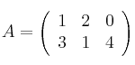
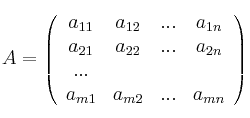
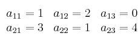

Aplicar el uso de las TICs en una actividad esencial como el aprendizaje y la enseñanza, brinda una calidad intachable, orienta y desarrolla la construcción de soluciones, establece personas críticas y capaces.
En la actualidad, existen una gran variedad de aplicaciones que pueden ser implementadas con fines educativos, esto ayudaría al estudiante a tener una percepción clara de los procedimientos matemáticos utilizados. Varias escuelas ya están haciendo uso de tabletas y aplicaciones móviles; por eso en este artículo se considera pertinente hablar de un software desarrollado en el entorno de Java para dar solución a la problemática de operaciones con matrices, el cual está basado en teoremas y métodos matemáticos bien conocidos. No debe ser difícil para el estudiante promedio el entender y adaptarse al programa.
Definicion de matriz
Una matriz es un conjunto de números ordenados en filas y columnas.
Las matrices tienen por nombre una letra mayúscula y sus elementos se encierran entre dos paréntesis (o dos corchetes)
Ejemplo de matriz:

Una matriz de orden m * n se expresa de forma genérica:

donde el elemento a[i,j] denota que está en la fila i y en la columna j
En la matriz A=
el elemento a[2,1] (fila 2 , columna 1) vale 3 .
Todos los elementos de la matriz A:
